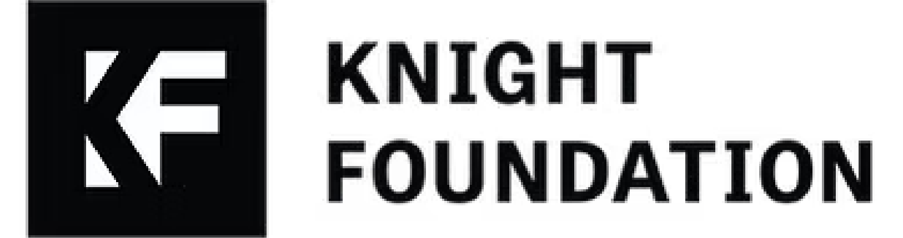

Mission Statement
The Penn Center on Media, Technology and Democracy (Penn MEDIATED) is committed to independent research on the information ecosystem and its impact on democracy.
Our mission is to advance our collective understanding of the information landscape through cutting-edge science—then leverage that research to foster a more informed society and strengthen the foundations of democracy. We focus on the media organizations and the online platforms, the incentives and the algorithms, that determine which ideas and beliefs spread, and which don’t. Penn MEDIATED's faculty and scholars are distinguished by their use of emerging technology for data-driven research of the information ecosystem, including novel data collections, large-scale cloud computing, and innovative applications of AI.
“There is a critical societal need to better understand—and respond to—the way media and information technologies mediate and even influence global conversations,” said J. Larry Jameson, Penn’s President. “Championing truth and upholding democracy are important elements of Penn’s strategic framework, In Principle and Practice.”
Partners
Founding Partners
Penn MEDIATED was established as the interdisciplinary hub for media, technology, and democracy scholarship and impact at the University of Pennsylvania. Dozens of scholars across seven Penn schools and centers advance the Center's mission and efforts with their research and contributions.

John S. and James L. Knight Foundation
A five-year, $5 million investment from the John S. and James L. Knight Foundation established Penn MEDIATED at the University of Pennsylvania.

University of Pennsylvania
An additional $5 million in combined resources comes from seven schools and centers across Penn, which together form the interdisciplinary core of the Center.


External Partners
Penn MEDIATED collaborates with an array of expert, non-academic partners that are dedicated to addressing the complex challenges impacting the information ecosystem and democracy.

Related Research Centers at Penn
Penn MEDIATED works alongside a deep bench of related centers and labs across the university which advance our understanding of the information ecosystem and democracy.